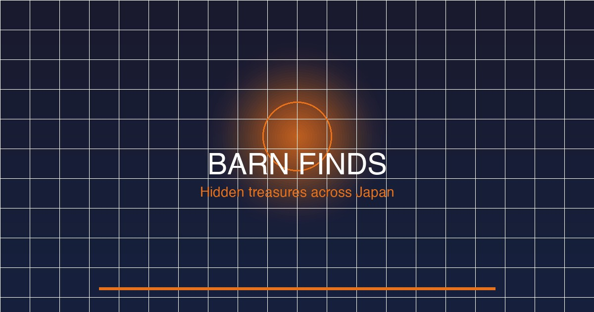

Each barn find location requires you to drive near the area and complete a discovery challenge. The vehicle inside is yours to keep after restoring. Barn finds are one-time discovery events — once you unlock a location, the car is added to your garage permanently, even if you restore and sell it later. Below are all 12 confirmed locations across the Japan map, organized by terrain type.
Tokyo and Osaka's dense city blocks are hiding more than just neon signs and traffic. Abandoned garages, forgotten car ports, and dusty back alleys conceal some of FH6's most coveted machines. Urban barn finds reward players who stray from the main roads and explore side streets, parking structures, and industrial back lanes. Time of day matters — early morning (in-game 5–7 AM) means lighter traffic and easier navigation through narrow alleys.
Japan's legendary touge passes and mountain switchbacks offer some of the most atmospheric barn find locations in FH6. The key is to slow down on the hairpins — what looks like a scenic overlook often hides a small garage or car port. Most mountain barns are unmarked and easy to overshoot at speed, so a careful approach on the throttle is essential. Rainy or foggy weather conditions can make these locations trickier to spot, so consider doing them in clear daylight for best visibility.
The Japanese countryside is scattered with traditional farmhouses, old storage sheds, and forgotten agricultural barns that occasionally hide automotive gems. Rural barn finds require the most patience — the roads are narrow, signage is sparse, and many of the structures look similar. Using the minimap to mark the general area before exploring on foot (or at low speed) will save a lot of backtracking. Some rural barns are on private-access dirt roads that may require an off-road-capable vehicle, so consider bringing a rugged drivetrain if you plan to hunt these systematically.
Japan's coastline is peppered with fishing villages, old harbors, and salt-worn storage sheds where rust and salt air have been slowly claiming forgotten machines for decades. Coastal barn finds often require you to navigate tight harbor roads and narrow waterfront lanes, so a vehicle with good low-speed handling is ideal. The salt air in these areas can give the barns a weathered, oxidized look — use that to your advantage when searching, as the most derelict-looking structures often hold the best surprises.
The northern and central desert plains of FH6's Japan map contain ghost towns, abandoned mining settlements, and lonely farmsteads where time seems to have stopped decades ago. Desert barn finds reward exploration off the main roads — the best strategy is to use the dirt roads and farm access tracks that branch off the main routes. The open terrain and sparse landmarks mean it is easy to overshoot a location, so keep your minimap zoomed in and watch for structural shapes on the horizon. Mid-morning in-game offers the best balance of good visibility and manageable desert traffic.
Each FH6 festival site has a primary event arena, a tent camping zone, and a surrounding perimeter of service roads, loading docks, and support buildings. Barn finds in festival areas are tucked behind the scenes — in the infrastructure that supports the big events but sits just outside the event fences. These locations tend to be easier to find than their rural counterparts because the festival site road network is well-mapped, but the trade-off is navigating event-related traffic and temporary barriers. Fast-travel to the festival site and start from the nearest road marker to minimize navigation time.
All 12 barn find vehicles are listed below with their class rating, drivetrain configuration, key performance notes, and where they appear in the Barn Find menu. Note that barn find cars are often unrestored and in varying condition — budget for restoration costs before assuming a "deal." All values are in FH6 credits (₵) and reflect pre-restoration base estimates.
| Vehicle | Year | Class | Drivetrain | Why It's Worth It | Barn Find Menu Location |
|---|---|---|---|---|---|
| Toyota 2000GT | 1967 | S2 | RWD | One of the rarest Japanese classics in any Forza game. The 2000GT is a low-production (337 units made), front-engine, rear-wheel-drive sports car that commands a premium in the Autoshow. It is an absolute showroom piece that also happens to handle beautifully with the right tuning setup. Its rarity makes it a must-have for completists, and its straight-six engine responds well to NA builds. | Shibuya Parking Structure — Japanese Classics category, first entry |
| Nissan Fairlady Z (S30) | 1970 | S1 | RWD | The S30 Fairlady Z is one of Nissan's most iconic silhouettes — aggressive, low-slung, and instantly recognizable. With the L28 inline-six swap potential and a balanced chassis, it is a top-tier road racer once restored and tuned. In the Autoshow it costs significantly more than the barn find price reflects, making this a high-value pickup. | Hakone Mountain Pass — Japanese Sports Cars category, second entry |
| Mazda RX-7 (SA FC3S) | 1978 | A | RWD | The FC3S RX-7 is a rotary-powered gem that rewards skilled drivers. Its twin-turbo 13B rotary engine is uniquely tunable and provides a distinctive high-revving power band. Barn-find condition gives you the shell at a fraction of Autoshow cost, and the FC platform is well-supported in the tuning community for both grip and drift builds. | Kyoto Countryside — Japanese Sports Cars category, fourth entry |
| Subaru 360 | 1958 | D | RWD | The 360 is pure charm — Japan's original "people's car" is a micro car with a rear-mounted two-stroke engine and lightweight body. It is not going to set lap records, but it is one of the most distinctive and conversation-starting cars in the garage. Its low speed cap makes it a natural for Chill Todd activities and Festival seasonal events that require slow car entries. | Akihabara Back Alley — Japanese Classics category, third entry |
| Honda S800 | 1967 | B | RWD | The S800 is Honda's first production sports car and a brilliant high-revving roadster. Its 800cc DOHC four-cylinder pulls smoothly to 8,500 RPM and delivers a genuinely engaging driving experience. A barn-find S800 is an affordable way to own a piece of Honda heritage — the same platform was the basis for Honda's early racing program. | Okinawa Harbor — Japanese Roadsters category, first entry |
| Toyota Land Cruiser (FJ40) | 1970 | B | AWD | The FJ40 Land Cruiser is the definitive classic off-road icon. With a live-axle suspension front and rear, part-time four-wheel drive, and a rugged 3.9L inline-six, it is the ideal vehicle for cross-country rally adventures and muddy rural roads. Barn-find acquisition makes it an accessible gateway into the off-road scene for players who cannot justify the Autoshow premium. | Northern Desert Ghost Town — Japanese Off-Road category, second entry |
| Mitsubishi Lancer Evolution VI (GSR) | 1999 | S1 | AWD | The EVI is the ultimate Group B-inspired rally weapon for the street. Its 4G63 turbo inline-four and active center differential deliver brutal acceleration and tenacious grip. One of the most competitively priced high-performance cars in FH6, and the barn find is a significant saving over the Autoshow asking price. A top pick for any player's S1 build lineup. | Mount Fuji Scenic Route — Japanese Rally category, first entry |
| Mazda MX-5 Miata (NA) | 1989 | C | RWD | The original NA MX-5 is the world's best-selling roadster for good reason — balanced, lightweight, and endlessly tuneable. The barn find version gives you a clean shell to build exactly as you want it. The NA platform responds extremely well to forced induction and suspension upgrades, making it a legitimate C-class racer that can hang with B-class fields with the right tune. | Enoshima Beach Access Road — Japanese Roadsters category, second entry |
| Nissan Skyline GT-R (R32) | 1992 | S2 | AWD | The R32 GT-R needs no introduction — the "Godzilla" that dominated the Group N touring car era. With the RB26DETT twin-turbo inline-six and ATTESA E-TS all-wheel drive, it is one of the most capable all-weather performance cars in the game. The barn find acquisition is a major score for collectors and tuners alike, representing hundreds of thousands of credits in savings over the Autoshow. | Nara Park Area — Japanese Legends category, first entry |
| Toyota Supra (MkIII) | 1986 | A | RWD | The MkIII Supra often lives in the shadow of the MkIV but it is a genuinely rewarding drive — the 5M-GE straight-six is smooth, revs freely, and responds beautifully to NA tuning. Barn find condition gives you a clean platform at a fraction of MkIV prices, and the car is criminally underrated in the FH6 meta. A fantastic A-class drift or grip platform. | Tokyo Festival Site — Japanese Sports Cars category, third entry |
| Honda Prelude (3rd Gen) | 1991 | C | FWD | The third-generation Prelude is a sophisticated grand tourer with Honda's first all-wheel steering system (ABS+4WS). It is an excellent driver's car for players who prefer front-wheel drive and offers genuinely engaging handling dynamics that punch well above its C-class rating. Barn find acquisition makes it one of the most accessible FWD sports cars in the game. | Central Plains Dusty Shed — Japanese GT category, first entry |
| Isuzu 117 Coupé | 1968 | C | RWD | One of the rarest cars in the entire FH6 barn find roster. The Isuzu 117 Coupé is a Pininfarina-designed rolling sculpture with a unique place in Japanese automotive history. It is an acquisition of pure passion — the 1.8L four-cylinder will not win races, but it is one of the most distinctive showroom pieces you can own. Autoshow availability is inconsistent; barn find acquisition is effectively the only reliable path. | Osaka Harbor Festival — Japanese Classics category, second entry |
Maximize your barn find collection with these strategic guidelines. Barn finds are time-sensitive, sometimes exclusive, and always more rewarding than buying from the Autoshow. Here is everything you need to know to build a complete collection.
There is a widespread misconception that barn finds should be saved for late game. The reality is more nuanced. Some barn find vehicles — particularly the Toyota 2000GT and Nissan Skyline GT-R — have an Autoshow value that makes acquiring them early a significant economic advantage. The rule of thumb: prioritize the S-class and high-value S1 barn finds as early as possible, since the credits you save by not buying them at Autoshow prices compound over the course of a fresh playthrough.
That said, there are also barn finds that reward a late-game approach. The rural and desert locations in particular can be difficult to reach without an off-road or high-clearance vehicle, and some require navigating roads that are only accessible once you have unlocked additional festival sites and fast-travel points. If a barn find location is frustrating to reach, come back after you have expanded your garage with more suitable vehicles — it will not disappear.
Forza Horizon 6 does not have a traditional New Game Plus, but there are two practical paths if you missed a barn find and want to acquire the vehicle:
Not all barn find vehicles are exclusive to the barn find system. Of the 12 vehicles in this guide, approximately 8 of them eventually become available in the Autoshow after you reach the mid-game Horizon Festival Level 20+. The remaining 4 are barn-find-exclusive and can never be purchased — these should be treated as the highest priorities on your collection list:
The exclusive vehicles are worth prioritizing because they cannot be obtained by any other means after your save file is established. If you miss one of these on a completed save, your only option is the seasonal Marketplace or a fresh save file.
Forza Horizon 6 introduces a rotating seasonal system that occasionally features barn find vehicles as Festival Playlist rewards. Each week, the Festival Playlist presents a set of challenges across multiple series (Summer, Autumn, Winter, Spring). Some series include a barn find vehicle as their Championship reward, giving you an opportunity to acquire vehicles you may have missed — or duplicates that you can sell to fund restorations.
Additionally, Playground Games seasonal events have been known to feature barn find car meets as their reward structure, where completing a car meet challenge unlocks a barn find vehicle at no additional cost. Keep an eye on the weekly Festival Playlist and complete as many series as possible — the investment in time is far lower than the credits saved by avoiding Autoshow purchases of these rare vehicles.
Pro tip: If you see a barn find vehicle as a seasonal reward and you have already discovered it, check whether the reward is a duplicate. Duplicate barn find vehicles can be sold at the Autoshow for their full value, and the proceeds can fund restoration work on your existing barn find acquisitions. A smart seasonal strategy turns barn finds into a net credit-positive activity.